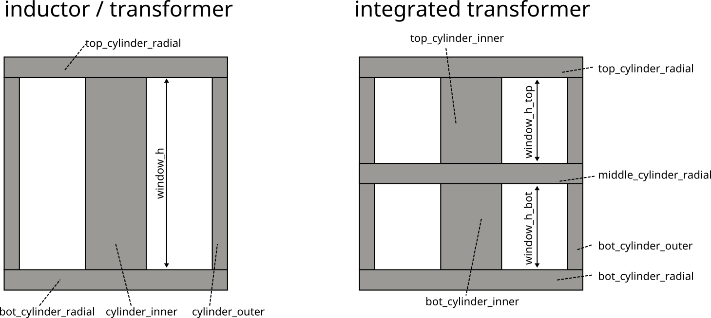
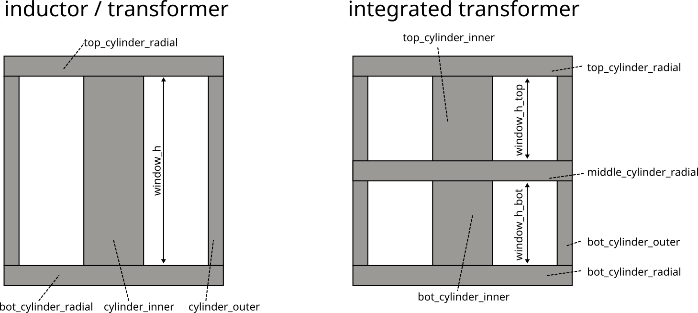

Developer Notes for FEMMT
This chapter contains some useful information when developing with femmt.
Variable naming
The variable naming is defined as shown in this section. Note that the names should be as given here. No acronyms, like f or freq for frequency.
 

Geometry variables
core_inner_diameter: core inner diameterwindow_w: width of winding windowwinding_h: height of winding windowr_inner: core_inner_diameter / 2 + winding_wr_outer: core outer radius, calculated by software for same cross-section as inner cylinder
Additional variables for integrated transformer
* window_h_top: height of top winding window
* window_h_bot: height of bottom winding window
currents, temperature
temperature: temperature (Do not useT,temp, …)frequency: frequency (Do not usef,freq, …)
Material variables
mu_r_abs: absolute value of mu_rmu_r_real: real part of mu_rmu_r_imag: imaginary part of mu_r
Winding creation
Since there are multiple possible virtual winding windows containing currently up to 2 conductors it is necessary to have a global order for every conductor. This order is set by the winding_number which is given to the Conductor on creation. This results in multiple lists containing the same conductor objects (called windings) in different objects:
Every virtual winding window contains a list of conductors. This list either contains one conductor (single winding) or two conductors (interleaved winding). When setting the interleaved winding the order of conductors is given by the order of the parameters. First given winding -> winding[0], second given winding -> winding[1].
The magnetic component contains a list of conductors too. This list contains every unique conductor from every virtual winding window. The order of the windings list in magnetic component is given by the winding_number (sorted in ascending order). This means that the conductor with the lowest winding_number is at position 0 of the winding list: windings[0].
Example:
2 conductors are created: Conductor0(winding_index=0) and Conductor1(winding_index=1). Additionally 2 virtual winding windows are created. The first virtual winding window only contains Conductor0, the second virtual winding window contains both conductors. The following winding lists are created:
VirtualWindingWindow0: windings = [Conductor0]
VirtualWindingWindow1: windings = [Conductor0, Conductor1]
MagneticComponent: windings = [Conductor0, Conductor1]
If Conductor1 has a lower winding_index than Conductor0 only the list in magnetic component would change since it does not change the parameter order for setInterleavedWinding() in VirtualWindingWindow1:
MagneticComponent: windings = [Conductor1, Conductor0]
The order of the conductors in the magnetic component windings list is very important for the simulation. When creating the model and running the simulation the order of the conductors in MagneticComponent.windings is used to determine if the conductor is the primary, secondary (, tertiary, …) winding.
In the TwoDaxiSymmetric class points for every conductor are created. Those points are stored in a list called p_conductor. p_conductor[0] is a list containing the points for every turn of the conductor with the lowest winding_index (primary winding). p_conductors[1] is a list containing the points for every turn of the conductor with the second lowest winding_index (secondary winding).
Currently the magnetic solver only supports primary and secondary windings, therefore it is useless to create more conductors. However the implemented structure is capable of working with n windings.
General file overview
.pro: solver files for communication between python and the solver.pos: field results.dat: integrated field results.msh: mesh files
Recommended Pycharm settings
Exclude simulation directory from indexing
Especially when performing Pareto optimizations in the example directory, Pycharm gets slow during indexing. To avoid this, you can use another directory or exclude the example_results directory from the project, as shown in the following steps:
File -> Settings -> project structure, select the folders you need (e.g. femmt/examples/example_results, right click and click excluded.
Line length
File -> Settings -> Editor -> Code Style
Set the max. length to 160.
Pycharm code highlighting for pro-files
Lint check
run
pycodestyle $(git ls-files '*.py')
to check all your files for correct linting.
also run
ruff check $(git ls-files '*.py')
For windows users, use the pycharm integrated Git Bash.
Build documentation
sphinx-multiversion documentation/source documentation/build/html